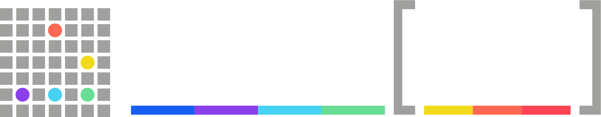

Este documento es una síntesis del trabajo colectivo realizado por la Federación durante el segundo semestre de 2025. Integra antecedentes de asambleas y debates previos con los resultados del diagnóstico y el plenario de Tandil de diciembre de ese año.
Su propósito es sistematizar y organizar las propuestas y tareas vigentes para asegurar su ejecución y facilitar su evaluación posterior.